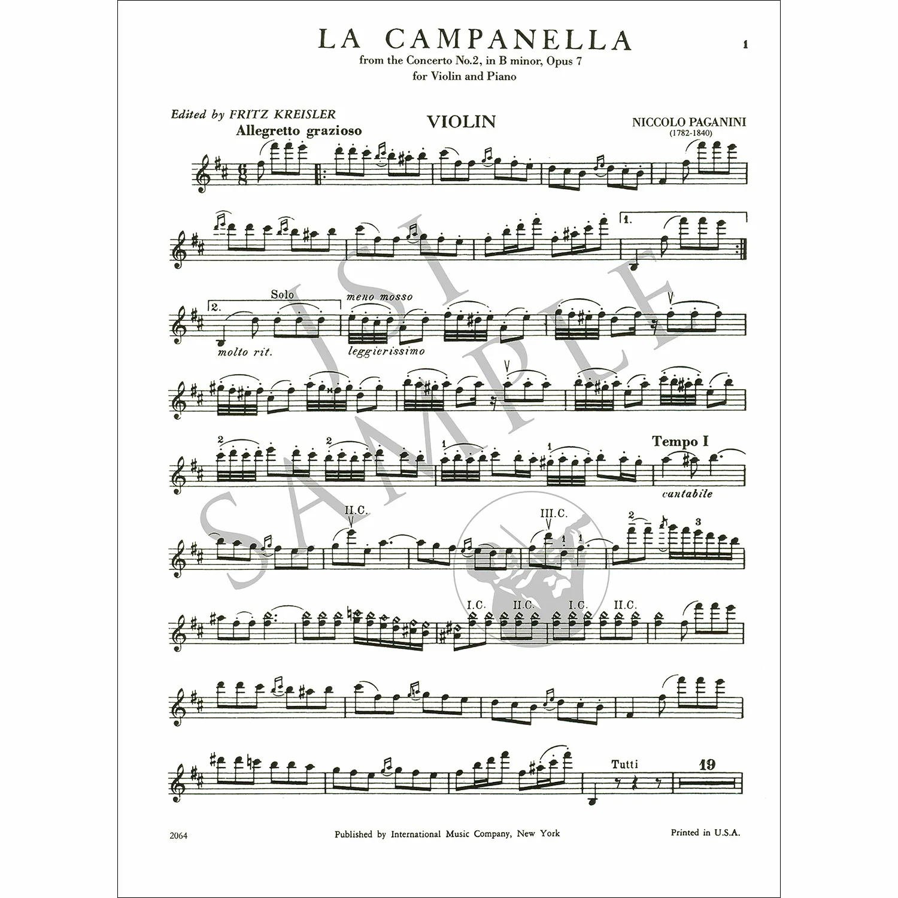

Влияние на других композиторовТворчество Паганини оказало огромное влияние на развитие европейской музыки XIX века. Его исполнительское мастерство вдохновляло музыкантов на поиск новых выразительных средств. Ференц Лист был настолько впечатлён игрой Паганини, что стремился достичь сопоставимого виртуозного уровня на фортепиано. Роберт Шуман также обращался к его музыке и исполнительским приёмам. Творчество Паганини помогало композиторам расширять технические и художественные возможности своих произведений. Сергей Рахманинов написал «Рапсодию на тему Паганини» для фортепиано с оркестром, использовав тему из 24-го каприса великого скрипача.  Музыка Паганини вдохновляла поколения композиторов Талант одного музыканта изменил историю европейского музыкального искусства |